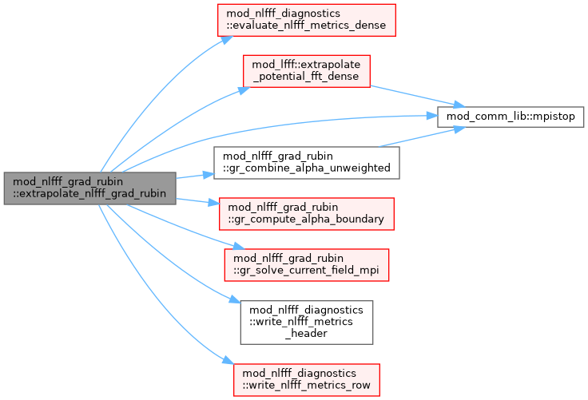
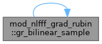
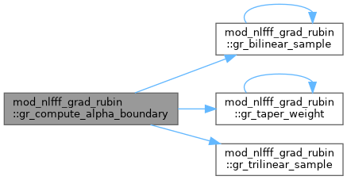
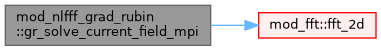
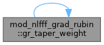
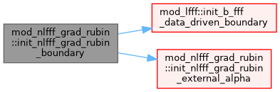
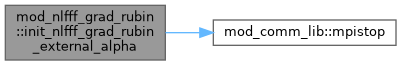

|
MPI-AMRVAC 3.2
The MPI - Adaptive Mesh Refinement - Versatile Advection Code (development version)
|
MPI-parallel fixed-grid Grad–Rubin NLFFF extrapolation. More...
Data Types | |
| type | nlfff_grad_rubin_config |
| type | nlfff_grad_rubin_result |
Functions/Subroutines | |
| subroutine, public | init_nlfff_grad_rubin_boundary (filename, unit_length, unit_magneticfield, qxc1, qxc2, alpha_filename) |
| subroutine, public | init_nlfff_grad_rubin_external_alpha (filename, unit_length, unit_magneticfield) |
| subroutine, public | extrapolate_nlfff_grad_rubin (iw_b, config, result) |
| pure subroutine, public | gr_combine_alpha_unweighted (alpha_positive, alpha_negative, alpha_combined) |
| pure double precision function, public | gr_taper_weight (r, zero_threshold, full_threshold) |
| subroutine, public | gr_compute_alpha_boundary (b, dx1, dx2, zero_threshold, full_threshold, alpha, valid_pixels, alpha_raw) |
| subroutine, public | gr_trilinear_sample (field, x, xmin, ymin, zmin, dx1, dx2, dx3, value) |
| pure double precision function, public | gr_bilinear_sample (field, x, y, xmin, ymin, dx1, dx2) |
| subroutine, public | gr_solve_current_field_mpi (current, padding, dx1, dx2, dx3, bc) |
Variables | |
| integer, parameter, public | gr_trace_bottom =1 |
| integer, parameter, public | gr_trace_open =2 |
| integer, parameter, public | gr_trace_weak =3 |
| integer, parameter, public | gr_trace_max_steps =4 |
| double precision, dimension(:,:,:), allocatable, save | boundary_b |
MPI-parallel fixed-grid Grad–Rubin NLFFF extrapolation.
This is an independent implementation of the current-field iteration in Wheatland (2006, 2007). The dense-grid representation is deliberate: it gives every rank deterministic read-only access during field-line tracing.
| subroutine, public mod_nlfff_grad_rubin::extrapolate_nlfff_grad_rubin | ( | integer, dimension(3), intent(in) | iw_b, |
| type(nlfff_grad_rubin_config), intent(in) | config, | ||
| type(nlfff_grad_rubin_result), intent(out) | result | ||
| ) |
Definition at line 250 of file mod_nlfff_grad_rubin.t.

| pure double precision function, public mod_nlfff_grad_rubin::gr_bilinear_sample | ( | double precision, dimension(:,:), intent(in) | field, |
| double precision, intent(in) | x, | ||
| double precision, intent(in) | y, | ||
| double precision, intent(in) | xmin, | ||
| double precision, intent(in) | ymin, | ||
| double precision, intent(in) | dx1, | ||
| double precision, intent(in) | dx2 | ||
| ) |
Definition at line 1213 of file mod_nlfff_grad_rubin.t.

| pure subroutine, public mod_nlfff_grad_rubin::gr_combine_alpha_unweighted | ( | double precision, dimension(:,:), intent(in) | alpha_positive, |
| double precision, dimension(:,:), intent(in) | alpha_negative, | ||
| double precision, dimension(size(alpha_positive,1), size(alpha_positive,2)), intent(out) | alpha_combined | ||
| ) |
| subroutine, public mod_nlfff_grad_rubin::gr_compute_alpha_boundary | ( | double precision, dimension(:,:,:), intent(in) | b, |
| double precision, intent(in) | dx1, | ||
| double precision, intent(in) | dx2, | ||
| double precision, intent(in) | zero_threshold, | ||
| double precision, intent(in) | full_threshold, | ||
| double precision, dimension(size(b,1),size(b,2)), intent(out) | alpha, | ||
| integer, intent(out) | valid_pixels, | ||
| double precision, dimension(size(b,1),size(b,2)), intent(out), optional | alpha_raw | ||
| ) |
Definition at line 940 of file mod_nlfff_grad_rubin.t.

| subroutine, public mod_nlfff_grad_rubin::gr_solve_current_field_mpi | ( | double precision, dimension(:,:,:,:), intent(in) | current, |
| integer, intent(in) | padding, | ||
| double precision, intent(in) | dx1, | ||
| double precision, intent(in) | dx2, | ||
| double precision, intent(in) | dx3, | ||
| double precision, dimension(:,:,:,:), intent(out) | bc | ||
| ) |
Definition at line 1226 of file mod_nlfff_grad_rubin.t.

| pure double precision function, public mod_nlfff_grad_rubin::gr_taper_weight | ( | double precision, intent(in) | r, |
| double precision, intent(in) | zero_threshold, | ||
| double precision, intent(in) | full_threshold | ||
| ) |
Definition at line 925 of file mod_nlfff_grad_rubin.t.

| subroutine, public mod_nlfff_grad_rubin::gr_trilinear_sample | ( | double precision, dimension(:,:,:,:), intent(in) | field, |
| double precision, dimension(3), intent(in) | x, | ||
| double precision, intent(in) | xmin, | ||
| double precision, intent(in) | ymin, | ||
| double precision, intent(in) | zmin, | ||
| double precision, intent(in) | dx1, | ||
| double precision, intent(in) | dx2, | ||
| double precision, intent(in) | dx3, | ||
| double precision, dimension(size(field,4)), intent(out) | value | ||
| ) |
Definition at line 1188 of file mod_nlfff_grad_rubin.t.
| subroutine, public mod_nlfff_grad_rubin::init_nlfff_grad_rubin_boundary | ( | character(len=*), intent(in) | filename, |
| double precision, intent(in) | unit_length, | ||
| double precision, intent(in) | unit_magneticfield, | ||
| double precision, intent(in), optional | qxc1, | ||
| double precision, intent(in), optional | qxc2, | ||
| character(len=*), intent(in), optional | alpha_filename | ||
| ) |
Definition at line 90 of file mod_nlfff_grad_rubin.t.

| subroutine, public mod_nlfff_grad_rubin::init_nlfff_grad_rubin_external_alpha | ( | character(len=*), intent(in) | filename, |
| double precision, intent(in) | unit_length, | ||
| double precision, intent(in) | unit_magneticfield | ||
| ) |
Definition at line 108 of file mod_nlfff_grad_rubin.t.

| double precision, dimension(:,:,:), allocatable, save mod_nlfff_grad_rubin::boundary_b |
Definition at line 64 of file mod_nlfff_grad_rubin.t.
| integer, parameter, public mod_nlfff_grad_rubin::gr_trace_bottom =1 |
Definition at line 10 of file mod_nlfff_grad_rubin.t.
| integer, parameter, public mod_nlfff_grad_rubin::gr_trace_max_steps =4 |
Definition at line 13 of file mod_nlfff_grad_rubin.t.
| integer, parameter, public mod_nlfff_grad_rubin::gr_trace_open =2 |
Definition at line 11 of file mod_nlfff_grad_rubin.t.
| integer, parameter, public mod_nlfff_grad_rubin::gr_trace_weak =3 |
Definition at line 12 of file mod_nlfff_grad_rubin.t.